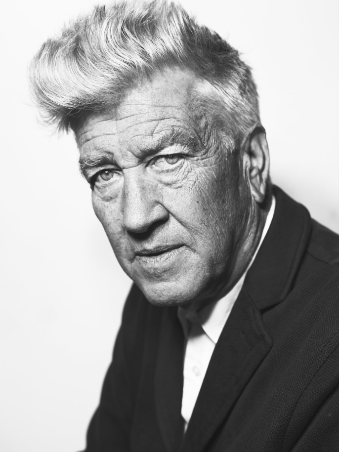

David Lynch est un cinéaste, scénariste, réalisateur, photographe, musicien et peintre américain. Il a reçu plusieurs oscars pour avoir réalisé les films tels que : Elephant Man, Mulholland Drive et Blue Velvet. Et est aussi créateur de la Fondation David Lynch.

Le 20 mai 2020, FIRE (POZAR) est mis en ligne sur le réseau Youtube. Un nouveau court-métrage du cinéaste David Lynch, et est animé par Noriko Miyakawa, ainsi que la musique est composée par Marek Zebrowski. Ce nouveau court métrage est très dynamique. Aucun élément ne reste statique, chaque élément à sa place et a son action à accomplir. Le visage de certains personnages, peut faire penser a : “Ant Head”, une autre œuvre de David Lynch (sortit en 2016).
Cette oeuvre fait écho à son tout premier court-métrage : “The Alphabeat.” Par ailleurs, la photographie de “FIRE(POZAR)”, est très représentative du début de carrière de David Lynch, puisque Lynch a débuté en tant que artiste-peintre. Nous retrouvons son charme de part, sa manière de penser, de ses formes difformes, de l’ambiance musicale régnante, de la photographie posé de noir et blanc d’une ambiance anxiogène.
Lynch est un cinéaste scrupuleux, et ayant toujours une idée exacte de ce qui doit être fait ; dans “FIRE (POZAR)” c’est Noriko Miyakawa qui crée l’animation de ce court-métrage. Derrière Noriko, c’est Lynch qui dirige. Il faut avouer que l’artiste est méthodique et perfectionniste. De ce fait, David Lynch a collaboré pour ce court-métrage avec Marek Zebrowski, son compositeur favoris. La texture sonore est aussi anxiogène que les images qui la suivent. C’est une composition tout aussi méthodique que les dessins et les animations de celui-ci. Tel un chef d’orchestre. L’univers de David Lynch est assez sombre, nous avons pu le voir dans les oeuvres citées précédemment. C’est un univers surréaliste, le cinéma de Lynch est très porté sur le mental. Au fil des années David Lynch à su de plus en plus oser s’exprimer sur sa personnalité et sur ses créations artistiques. Ce court-métrage récemment sorti, n’est pas un tout nouveau projet. Dans une interview, Lynch, affirme qu’il a prit son temps avant de le produire. C’est ainsi qu’aujourd’hui, FIRE(POZAR) est publié.